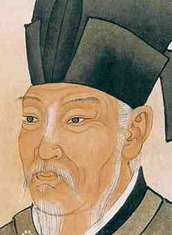

白居易（772年－846年），字乐天，号香山居士，唐代伟大的现实主义诗人，与杜甫、韩愈并称“三大诗人”。白居易出生于河南新郑，曾任翰林学士、左拾遗等职，一生创作了大量脍炙人口的诗篇，现存诗歌约2600多首，内容丰富，题材广泛，风格多样，以通俗易懂、情感真挚著称。白居易的诗歌不仅在中国文学史上占有重要地位，也对后世文学产生了深远影响。
------ 卖炭翁 | 观刈麦 | 钱塘湖春行 ------
卖炭翁，伐薪烧炭南山中。
满面尘灰烟火色，两鬓苍苍十指黑。
卖炭得钱何所营？身上衣裳口中食。
可怜身上衣正单，心忧炭贱愿天寒。
夜来城外一尺雪，晓驾炭车辗冰辙。
牛困人饥日已高，市南门外泥中歇。
翩翩两骑来是谁？黄衣使者白衫儿。
手把文书口称敕，回车叱牛牵向北。
一车炭，千余斤，宫使驱将惜不得。
半匹红纱一丈绫，系向牛头充炭直。
田家少闲月，五月人倍忙。
夜来南风起，小麦覆陇黄。
妇姑荷箪食，童稚携壶浆，
相随饷田去，丁壮在南冈。
足蒸暑土气，背灼炎天光，
力尽不知热，但惜夏日长。
复有贫妇人，抱子在其旁，
右手秉遗穗，左臂悬敝筐。
听其相顾言，闻者为悲伤。
家田输税尽，拾此充饥肠。
今我何功德，曾不事农桑。
吏禄三百石，岁晏有余粮。
念此私自愧，尽日不能忘。
孤山寺北贾亭西，水面初平云脚低。
几处早莺争暖树，谁家新燕啄春泥。
乱花渐欲迷人眼，浅草才能没马蹄。
最爱湖东行不足，绿杨阴里白沙堤。。
© 版权所有 自定义小组3